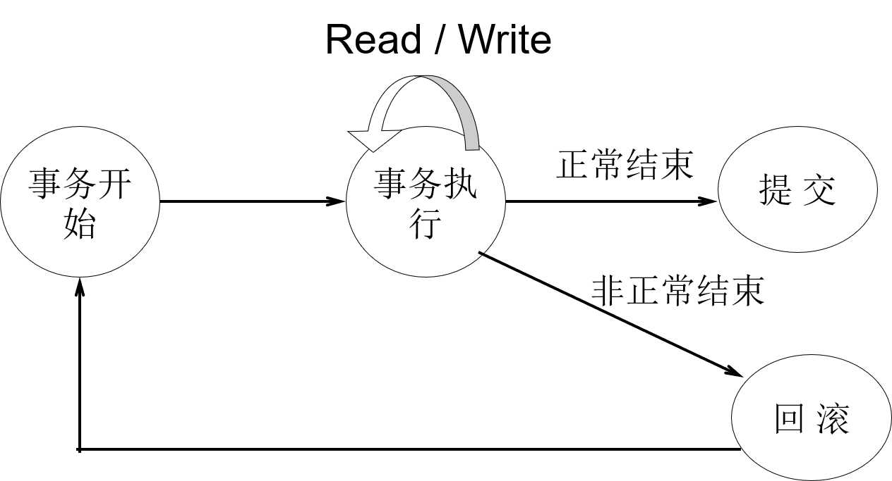
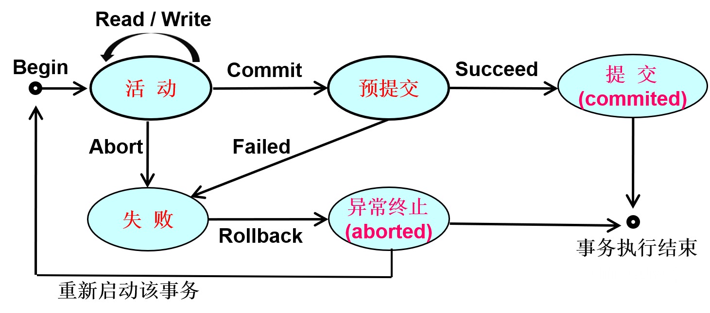

第一章:数据库系统概述
基本概念
- 数据库(DB): 是数据集合, 具有统一的结构形式并存放于统一的存储介质内, 它由多种应用数据集成, 并可被应用所共享
- 数据库管理系统(DBMS): 是管理数据库的系统软件
- 数据库系统(DBS): 是一个以对海量的、具有复杂数据结构的、可以持久保存的、可供多用户共享的数据进行统一管理为目标的计算机系统
- 数据库管理员(DBA): 对数据库进行规划、设计、维护、监视的专职人员
- 相互之间的关系
1
2
3
4
5
6
7
8
9数据库应用系统---+-[数据库系统]---+-[数据库] <------------+---------------+
| | | |
+-应用软件 +-[数据库管理系统] : 管理 |
| | |
+-应用界面 +-[数据库管理员] : 规划, 设计, 维护, 监视
| |
+-数据库用户 +-软件平台
|
+-硬件平台
数据库系统的特点
- 数据集成化: 统一的数据结构/数据模式
- 数据独立性: 数据或数据结构(物理, 逻辑) <--> 应用程序
- 数据共享性: 高
- 数据冗余性: 低
- 数据的安全性，完整性和一致性
- 并发控制和故障恢复
数据库内部结构体系
- 数据模式: 数据库中数据结构的具体表示与描述
- 三级模式
- 概念模式: 整个数据库中数据的全局逻辑结构 -> 概念数据库
- 外模式: 某个用户所需数据的逻辑结构 -> 用户数据库
- 内模式: 物理存储结构和物理存取方法 -> 物理数据库
- 二级映射
- 概念->内: 全局逻辑结构 -> 数据的物理存储结构
- 外->概念: 多个外模式 -> 一个概念模式, 而每个外模式是概念模式的一个基本视图
- 三级模式与数据独立性的关系
- 概念->内: 物理独立性
- 外->概念: 逻辑独立性
第二章:数据模型
数据模型的基本概念
- 数据模型: 数据基本特征的抽象
- 描述数据结构: 数据的类型, 内容, 性质, 数据间联系
- 定义数据操作: 操作的类型, 方式
- 定义数据约束: 数据间的相互关系: 语法语义联系, 制约与依存, 动态变化规则
- 数据模型的核心: 数据结构
- 不同类型数据模型的区分依据: 应用层次
- 三个抽象层次
- 概念数据模型: 面向客观世界, 面向用户; 客观对象的数据特征及相互关系
E-R模型, EE-R模型; 面向对象模型; 谓词模型
- 逻辑数据模型: 面向数据库系统; 事物及关系在选定的DBMS中的实现结构
层次, 网状模型; 关系, 面向对象, 谓词模型; 对象关系模型
- 物理数据模型: 面向计算机物理表示; 数据模型的物理表示
- 概念数据模型: 面向客观世界, 面向用户; 客观对象的数据特征及相互关系
数据模型的四个世界
- 现实世界: 客观世界中的应用环境
- 概念世界: 基于现实世界, 进一步的抽象而形成
- 信息世界: 基于概念世界, 用特定的DBMS构造而成的逻辑数据模型
- 计算机世界: 逻辑数据模型在计算机中的物理实现
1
2
3
4
5
6
7
8
9现实世界 用户1 ... 用户n
| | |
概念世界------>概念模型 | |
| | | |
| | +--->外模式1 ... 外模式n
信息世界------>逻辑模型-------| | |
| | +--->概念模式---------+
| | |
计算机世界---->物理模型----------->内模式
概念世界与概念模型
- E-R模型与E-R图（包括扩充E-R模型）
- 实体: 客观存在且又能相互区别的事物
- 属性: 实体所具有的某种特性或特征
- 多值属性: 一个实体, 多个取值(例如爱好, 可有多个)
- 组合属性: 一个性质, 多个属性(名字 <-> 姓, 名, 中间名)
- 联系: 不同实体集中, 实体间的对应关系
- 联系上的函数对应关系: 一一, 一多/多一, 多多
- 参与方式
- 参与方式标一个数, 参与基数标范围
- 考虑一个实体e, 在关系R的函数对应关系中, 有x条线与他相连, 则其参与基数为x
- 考虑实体集E, min-card(E,R): 其中实体参与基数最小值, max-card(E,R)同理
- IS-A联系: 超集->子集
- 弱实体: 依赖于其他某个实体, 多个弱实体依赖一个实体, 从弱实体到依赖联系的有向箭头
- 面向对象模型
- 对象: 客观世界中能够相互区别开来的事物
- 对象标识符: OID: 每对象有仅有一个, 用以相互区别
- 类: 具有相同属性, 方法的对象集合
- 方法: 施加在对象上的程序, 可审视或改变属性值
- 超类和子类: 类的子集叫做子类, 原来的类叫做超类
- 聚合: 若干个简单类聚合成一个复杂的类的过程
- 分解: 复杂类分解成若干层次上的简单类的过程
- 继承: (超类与子类)单向不循环的层次结构, 共享实现和定义
- 合成: (聚合与分解)
信息世界和逻辑模型
- 关系模型
- 关系: 由行和列组成的二维表格(表框架 + 元组*n)
- 属性: 表框架中的每一列
- 值域(域): 元组在某一属性下的取值范围
- 元组: 关系中的每一行
- 关系数据库模式: 该关系数据库中所有关系的关系模式的集合
- 关键字: 能唯一标识关系中的一个元组, 且又不含多余的属性值 的 属性集
计算机世界与物理模型
- 逻辑模型的物理存储
- 项: 文件系统中最小基本单位, 项内符号是不能继续分割
- 记录: 由若干项组成, 有内在语义联系
- 文件: 记录的集合
- 提高文件访问效率的常用方法
- 索引: 将文件中的记录与其物理地址(即磁盘块)间建立一张对应关系表
- 集簇: 将具有相同或相邻项值的记录聚集在相同磁盘块内或圆柱体内以减少读盘次数
- HASH: 通过一个hash函数, 将要查找的记录转换成该记录所在的物理地址
第三章:关系数据库系统
关系数据库系统概述
关系数据库系统的衡量准则
- 完全关系型的十二条衡量准则
- 信息准则: 逻辑一级
- 所有信息 -> 表中的值, 唯一且显式地表示
- 结构描述信息 -> 组织成关系形式
- 确保访问准则
- 表名+关键字值+列名 -> 访问到每一个原子数据
- 空值的关系处理准则
- 空值: 无意义/当前未知
- 系统应当可以处理有空值参与的: 比较运算, 表达式运算, 统计运算
- 基于资源管理的动态联机目录
- 数据库的描述信息(数据字典) 与 用户数据 有 相同的表示形式和操作方式
- 被授权用户可对 数据库的描述信息 进行 查询与扩充
- 统一易用的数据子语言: 至少一种子语言支持以下功能
- 数据定义
- 视图(view)定义
- 数据操纵
- 完整性约束能力
- 授权机制
- 事务处理能力
- 视图更新准则: 视图除查询外, 还可增加, 删除, 修改数据
- 高级的插入、删除及修改操作: 一条命令可以插入、删除及修改操作多条元组
- 物理数据独立性
- 逻辑数据独立性
- 数据完整性准则: 提供三类数据完整性约束的定义功能
- 分布独立性: 数据分布的改变不影响原有的应用程序
- 无损害原则: 对提供低级数据子语言的要求
- 信息准则: 逻辑一级
- 空值（NULL）的定义: 无意义/当前未知的值
关系模型数学理论—关系代数
关系模型（概念）
- 关系数据结构
- 表结构（表头）:
- 表框架: 属性组成表框架
- 表的元数: n个属性<->表的元数
- 表的基数: m个元组<->表的基数
- 关系：关系的性质
- 元组: 个数有限, 唯一, 次序无关, 分量原子性, 分量值域同一
- 属性: 名称唯一, 次序无关
- 关键字：候选关键字，主关键字，外关键字
- 关键字: 唯一最小标识元组的属性集, 每张表至少一个
- 主关键字: 被选中的关键字
- 候选关键字: 其他
- 外关键字: 如果表A中的属性集F是表B的关键字, 则称该属性集F为表A的外关键字
- 关系数据库：关系子模式-视图（view）
- 表结构（表头）:
- 关系操纵
- 数据查询：步骤
- 两个关系的合并: 有多张表, 先合并为单个关系
- 单个关系内的元组选择: 选择符合条件的元组(行指定)
- 单个关系内的属性指定: 执行属性(列指定)
- 元组: 单个关系内的操作
- 删除: 确定被删除的元组->执行删除
- 插入: 添加元组
- 修改: 删旧->插新
- 空值的处理
- 主键不允许空值
- 算数表达式: 含空值, 结果为空值
- 逻辑表达式: 含空值, 结果为false
- 统计计算: 空值不计入(视而不见)
- 数据查询：步骤
- 关系中的数据约束
- 实体完整性约束: 主关键字属性不为空值
- 参照完整性约束: 外键要么取空值, 要么是被引用表中的主键值
- 用户定义的完整性: 用户自己定义的属性取值约束
关系的表示
- 关系的表示
设属性域为$D_1, D_2, \cdots, D_n$
关系$R\subseteq D_1\times D_2\times\cdots\times D_n$ - 迪卡尔乘积
$D_1, D_2, \cdots, D_n$是$n$个集合
$D_1\times D_2\times\cdots\times D_n=\{(d_1, d_2, \cdots, d_n): d_i\in D_i, i\in (1, 2, \cdots, n)\}$
$|D_1\times D_2\times\cdots\times D_n| = \prod_{i=1}^n |D_i|$
关系操纵的表示
- 关系代数中的五种基本运算：选择，投影，笛卡儿积，并，差（请注意每个运算符的执行条件和结果关系的关系模式）
- 投影运算: $\pi_A(R)$
- 略去某些列, 重排剩余列的次序
关系$R$有属性$\{A_1,A_2, \cdots, A_n\}$, 在其中$m$个属性上的投影运算如下
$\pi_{B_1, B_2, \cdots, B_n}(R), B_i\in\{A_1,A_2, \cdots, A_n\}$ - 注意消除可能出现的重复元组
- 略去某些列, 重排剩余列的次序
- 选择运算: $\sigma_F(R)$
- 关系模式不变, 由属于$R$且满足条件$F$的元组构成
- 笛卡尔乘积 - 关系的合并: 交换律, 结合律
- 若有相同的属性名, 必须在结果关系中对其中一个换名
<!– + 交运算: 同类关系 - 用$R\cap S = R-(R-S)$代替, 不是基本运算 –>
- 若有相同的属性名, 必须在结果关系中对其中一个换名
- 并运算: $R\cup S$同类关系
- 关系模式不变, 属于$R$或者$S$
- 差运算: $R-S$同类关系
- 关系模式不变, 属于$R$且不属于$S$
- 投影运算: $\pi_A(R)$
- 基本运算的应用
- 插入: $R^*=R\cup R_{new}$
- 删除: $R^* = R-R_{old}$
- 修改: $R^* = (R-R_{old})\cup R_{new}$
- 查询: $\pi_A(\sigma_B(R))$简写为$\pi_A\sigma_B(R)$: 不能交换位置
关系模型与关系代数
- 关系: $n$元有序组的集合
- 关系操纵: 关系上的集合运算
- 关系代数: 关系集合$A$及5种基运算构成的代数
- 关系模型
- 关系模型的数据结构
- 关系模型上的数据操纵
- 关系模型上的数据约束
关系代数中的扩充运算
- 交运算: 同类关系
- $R\cap S = R-(R-S)$
- 关系模式不变, 既属于$R$也属于$S$的元组组成的集合
- 除运算: $\textrm{Head}(S)\subset \textrm{Head}(R)$
- 关系模式: $\textrm{Head}(T)=\textrm{Head}(R) - \textrm{Head}(S)$
- 设$x\in T$, 则$\forall y\in S$, $(x,y)\in R$, 所有满足条件的$x$构成结果
- 如果$R=T\times S$, 则$T=R\div S$, $S=R\div T$; 如果$T=R\div S$, 则$T\times S\subseteq R$
- 联接运算
- 根据联接条件合并: $R\bowtie_F S=\sigma_F(R\times S)$
- 自然联接: $R\bowtie S$所有同名属性上的取值都一样, 就联接元组, 同名属性保留一份
- 外联接: 有”外”的一侧, 其所有元组均出现, 另一侧无匹配元组就用null代替
- 扩充运算与基本运算之间的关系
- 交: 可由差运算实现: $R\cap S=R-(R-S)=S-(S-R)$
- 除:
- $\textrm{Head}(R) = \{A_1, \cdots, A_n, B_1, \cdots, B_m\}$
- $\textrm{Head}(S) = \{B_1, \cdots, B_m\}$
- $R\div S=\pi_{A_1,\cdots A_n}(R)-\pi_{A_1,\cdots A_n}((\pi_{A_1,\cdots A_n}(R)\times S)-R)$
- 扩充运算的应用实例
关系代数的应用
写在后面的大题部分
- 综合的关系代数应用表示，复杂查询的关系代数表达式
- 关系代数的应用
- 单个关系上的选择与投影
- 两个关系的并、交、差
- 两个关系的迪卡尔乘积、自然联接、θ-联接
- 两个关系的除法
- 难点
- 查询条件带有‘否定’语义：‘不等’比较 & 减法运算
- 使用表联接查询，还是使用除法?
- 正确使用自然连接运算 和 除法运算
- 表的自联接
关系演算
- 原子公式
- 谓词是公式
- $u(i) \theta v(j)$是原子公式, 其中$u(i), v(j)$是元组中属性的值, $\theta$是比较运算符
- $u(i) \theta a$是原子公式, 其中$a$是常量
- 公式的定义: 以下三种方式, 有限次数组合构成
- 原子公式是公式
- 公式的与, 或, 蕴含, 非 均为公式
- 量词约束一个公式, 构成新公式
- 基于关系演算的数据查询表示
- 投影
$$\pi_{A_{1},A_{2},\cdots,A_{k}}(R)=\exists x_{k+1},x_{k+2},\cdots ,x_n(R(x_1,x_2,\cdots,x_n))$$ - 选择
$$\sigma_F(R)=R(x_1,x_2,\cdots,x_n)\wedge F$$- 相等比较可以直接用常量代替: $\sigma_{x_1=’a’}(R)=R(‘a’,x_2,\cdots,x_n)\wedge F$
- 笛卡尔积
$$R\times S = R(p)\wedge S(q)$$ - $\theta$-联接
$$R\underset{F}{\bowtie} S = R(p)\wedge S(q)\wedge F$$ - 自然联接
$$R\bowtie S = R(x,y,z)\wedge S(t,u,v)$$ - 自联接, 重命名
$$R(x, g_1)\wedge R(x, g_2)$$ - 除法
$$R\div S=\forall y(S(y)\rightarrow R(x,y))$$ - 删除
$$R-S = R(u)\wedge \neg S(u)$$ - 插入
$$R\cup S = R(t)\vee S(t)$$ - 修改 = 删除再插入
- 投影
- 公式的表示
- $\phi_1\wedge\phi_2$
- 有公共变元, 等价于自然联接$R_1\bowtie R_2$
- 无公共变元, 等价于笛卡尔乘积$R_1\times R_2$
- $\phi_1\vee\phi_2$: $R_1\cup R_2$
- $\phi_1\rightarrow\phi_2$: $R_2\div R_1$
- $\neg\phi$: $(\prod^nD_i)-R$, $D_i$为第$i$个自由变元的值域
- $\exists r(\phi)$: $\pi_{A_1,A_2,\cdots,A_k}(R)$
- $\forall r(\phi)$: $R\div S$
- $\phi_1\wedge\phi_2$
关系数据库语言SQL’92
SQL概貌
- SQL的基本概念: 结构化查询语言
- 使用方式
- 自含式: 独立的交互式命令行语言
- 嵌入式: 嵌入到某种高级语言当中
- 基表: 关系
- 虚表(视图): 关系子模式
- 行: 元组
- 列: 属性
- 使用方式
SQL数据定义功能
啥也没有?怎么回事啊, 算了写一点乱七八糟的吧
- 创建基表
2
3
4
colname datatype NOT NULL,
colname2 datatype2
}
修改基表
1
2ALTER TABLE tabname ADD colname datatype
ALTER TABLE tabname DROP colname删除基表
1
DROP TABLE tabname
SQL数据操纵功能
- SQL语言与关系代数的关系
- 映像语句（select statement）的结构
- 目标子句:
SELECT * | colname { , colname ... }最后执行, 有排序时倒数第二执行
- 范围子句:
FROM tabname { , tabname ... }在SQL中, 这些表相当于被笛卡尔乘积连接, 因此联结时需要在where中给出条件
- 条件子句:
[ WHERE search_condition ] - 分组子句:
[ GROUP BY colname { , colname ... } - 分组查询子句:
[ HAVING group_condition ] - 排序输出子句:
[ ORDER BY colname [ ASC | DESC ] { , colname [ ASC | DESC ] ... } ]最后执行
- 两个必须的子句:
select/from - having子句的前面必须有group by子句
- 两个必须的子句:
- 目标子句:
- 基本查询功能
- distinct谓词:
DISTINCT colname统计查询使用, 去重统计 - LIKE:
colname [NOT] LIKE val1 [ESCAPE val2]val1是模板, 其中_匹配任意一个字符,%匹配任意一个字符串val2定义转义指示字符, 跟在其后的,val1中的通配符和转义字符将表示原义
- IS NULL谓词:
colname IS [NOT] NULL判断是否为NULL - 多表联接查询:
WHERE当中, 通过属性的相等, 实现表与表之间的连接 - 表的自联接查询:
tabname [[AS] alias]给表起别名
- distinct谓词:
- 嵌套查询
- IN:
expr [NOT] IN (subquery)标量与集合量之间的属于比较 - SOME/ANY/ALL:
expr θ SOME|ANY|ALL (subquery)标量与集合中元素之间的量化比较 - EXISTS:
[NOT] EXIST是否为空集的判断谓词 - 相关子查询与独立子查询: 子查询内部引用了外部查询的表或元组变量, 因此每当外部取值变化, 都要再运行子查询
- IN:
- 子查询的合并: 带
ALL意为允许重复- UNION:
(subquery) UNION [ALL] (subquery)并 - INTERSECT:
(subquery) INTERSECT [ALL] (subquery)交 - EXCEPT:
(subquery) EXCEPT [ALL] (subquery)减
- UNION:
复杂数据查询
- 统计查询
COUNT(colname): 计数, 空值忽略COUNT(DISTINCT colname): 计数互不相同的值, 空值忽略SUM(colname): 求和, 空值忽略AVG(colname): 求平均, 空值忽略MIN(colname): 求最小, 空值忽略MAX(colname): 求最大, 空值忽略
- 分组统计查询:
GROUP BY colname {, colname}按照colname的取值不同, 分组统计SELECT当中必须包括GROUP BY当中的属性 - 分组选择统计查询:
HAVING group_cond必须先分组, 之后满足group_confd的组才会被保留 关系代数中的除法运算功能在SQL中的表示方法
待构造的除法: $\pi_{sno, cno}(SC)\div \pi_{cno}(C)$语义: 对于符合要求的SC中sno, (对于任意的C中cno, 都有sno选修过cno的记录)
等价于: 对于符合要求的SC中元组S, 对于任意C中元组x, 都能找到元组y,使得y.sno=S.sno and y.cno=x.cno
任意->不存在不满足->不存在(不存在):1
2
3对SC中S, 不存在
对C中x, 不存在
SC中的S-x元组y, 即y.sno=S.sno and y.cno=x.cno1
2
3
4
5
6
7
8
9
10
11SELECT DISTINCT SC.sno #
FROM SC S # 被除数当中的元组, 作为目标元组, 将目标属性传入(S.sno)
WHERE NOT EXISTS ( # 不存在不满足条件的元组
SELECT * #
FROM C x # 除数当中的元组, 被要求对任意S.sno全都有
WHERE NOT EXISTS ( # 为了表示"不满足", 构造对S.sno不含有, 即不存在满足的元组
SELECT * #
FROM SC y # 被除数元组的任意元组, 寻找满足的元组
WHERE y.sno = S.sno AND y.cno = x.cno # 一个[除数,被除数]的元组, 两组相等关系, 分别约束: (对被除数进行查询), (对除数进行查询)
) # 这个子查询可以由NOT IN代替, 表示不含有
) #
- 在FROM子句中嵌入子查询:
FROM (subquery) [[AS] alias]
<!– + 查询结果输出 - 结果元组去重：distinct
- 结果元组排序：order by –>
- 统计查询
SQL的更新功能
- 元组删除:
DELETE FROM tabname [WHERE cond] 元组插入:
1
2INSERT INTO tabname [(colname {,colname})]
VALUES (expr | NULL {,expr | NULL}) | (subquery)元组修改:
1
2
3UPDATE tabname
SET colname=expr | NULL | subquery, ...
[WHERE cond]
视图
- 视图概念: 若干张表经映像语句构筑而成的表(导出表)
- 视图与基表的区别: 同样有构造信息, 但视图不存储(虚表)
- 创建:
CREATE VIEW <视图名> [(<列名>{, <列名>})] AS <映像语句> [WITH CHECK OPTION]映像语句实际上就是子查询, CHECK OPTICON 不知道什么意思
- 删除:
DROP VIEW <视图名> - 视图的嵌套定义
- 视图删除中的连锁反应: 视图的删除操作时，将连带删除定义在该视图上的其它视图
- 可更新视图的判断准则: 视图每一行对应基表每一行, 视图每一列对应基表每一列
- 视图的作用: 提高数据独立性, 简化用户观点, 自动的安全保护
第四章:数据库的安全性与完整性保护
数据库的安全性保护
- 数据库安全的基本概念: 防止非法使用数据库(规定的途径和规则)
- 主体: 数据访问者
- 客体: 数据及其载体
- 身份标识与鉴别: 主体具有标识符和口令
- 自主访问控制: 基于存取矩阵的安全控制模型(用户给定权限, 访问时检查权限)
客体所有者(创建者)自动拥有全部权限, 有权限的可授予他人权限, 权限仅限这两种方法获得
登陆时检查: 是不是管理员->是不是所有者->有没有被授权
存储矩阵: 行标签: 客体; 列标签: 主体 - 审计: 跟踪记录用户对数据的访问操作
时间, 内容, 用户名, 终端名, 操作类型, 操作结果; 给出报警信息
- SQL对数据库安全的支持
- SQL中的存取权限
权限: SELECT INSERT DELETE UPDATE REFERENCE EXECUTE USAGE
对象: 表/视图 属性 域(数据类型) 存储过程/函数/触发器 - 授权命令:
GRANT <权限列表> ON <对象> TO <用户名列表> [WITH GRANT OPTION] - 回收命令:
REVOKE <权限列表> ON <对象> FROM <用户名列表> [RESTRICT | CASCADE]CASCADE连锁回收; RESTRICT不连锁才回收, 否则拒绝回收
- SQL中的存取权限
数据库的完整性保护
- 数据库完整性保护: 对数据库中数据的正确性和一致性的维护
- 功能: 设置功能; 检查功能; 处理功能
- 目的: 及时发现错误->防止错误的蔓延->恢复到正确状态
- 常用实现措施
- 完整性约束条件的定义及检查
- 触发器
- 并发控制技术
- 实体完整性: 关键字不为空
- 参照完整性: 不能引用不存在的实体(外关键字要么与被引相同, 要么为空值)
- 用户定义完整性: 用户自己定义
- 完整的CREATE TABLE命令
- 基表的创建
- 完整性约束的定义：主关键字，外关键字，CHECK约束，UNIQUE，NOT NULL, DEFAULT
1
2
3
4
5
6
7
8
9
10{ NOT NULL |
[ CONSTRAINT constraint_name ]
# 给约束起名
UNIQUE
| PRIMARY KEY
| CHECK ( search_condition )
| REFERENCES table_name [ ( column_name ) ]
[ ON DELETE CASCADE | RESTRICT | SET NULL ]
[ ON UPDATE CASCADE | RESTRICT | SET NULL ]
}
1 | FOREIGN KEY ( colname { , colname ... } ) |
- 触发器: 在数据库系统中，一个事件的发生会导致另外一些事件的发生，这样的功能被称为触发器
- 创建命令
1
2
3
4
5
6
7
8
9
10
11
12
13CREATE TRIGGER trigger_name { BEFORE | AFTER }
# 定义时机
{ INSERT | DELETE
# 触发事件
| UPDATE [ OF colname { , colname ... } ] }
ON table_name
[ REFERENCING corr_name_def { , ...... } ]
[ FOR EACH ROW | FOR EACH STATEMENT ]
# 执行方式
[ WHEN ( search_condition ) ]
{ statement
# 结果事件
| BEGIN ATOMIC statement; { statement; ... } END
第五章:事务处理并发控制与故障恢复技术
事务处理（概念）
- 事务的定义: 某个用户所执行的一个不能被打断的对数据库的操作序列
- ACID性质
- A原子性: 不可分割的操作序列, 要么全部, 要么不执行
- C一致性: 执行前后都满足一致性
- I隔离性: 并发结果与某种串行执行结果相同, 即相互独立
- D持久性: 事务完成，它对数据库的所有更新应永久地反映在数据库中
- 事务活动图
 - 状态转换图
 - 事务控制语句
- commit transaction
- rollback transaction: 可以恢复到存在的保存点, 或者回到事务起点
- savepoint: 设置保存点
- 相关的参数设置语句
- 自动提交:
SET AUTOCOMMIT ON|OFF - 读写:
SET TRANSACTION READONLY|READWRITE - 隔离级别:
SET TRANSACTION ISOLATION LEVEL READUNCOMMITTED|READCOMMITTED| READREPEATABLE|SERIALIZABLEREADUNCOMMITTED无封锁; READCOMMITTED读加共享锁到读完; READREPEATABLE读加共享锁到事务结束; SERIALIZABLE串行化调度执行
- 自动提交:
- 事务的语句组成成分: 开始, 结束(正常结束->提交事务, 非正常结束->回滚)
并发控制技术（概念）
- 事务
- 事务的并发性: 数据库是一个多用户共享系统, 以事务为单位访问
- 并发控制: 实现多个用户事务的并发执行的技术
- 调度: DBMS中事务执行的操作序列, 按时间排序
- 串行调度: 做完一个接下一个事务(首先是一个事务的所有操作，然后是另一个事务的所有操作, 原句真啰嗦)
- 可串行化调度: 一个调度对数据库状态的影响和某个串行调度相同
- 冲突: 调度中一对相邻操作, 交换顺序，涉及的事务中至少有一个的行为会改变
- 冲突可串行化(可串行化的充分条件): 冲突可串行化调度”冲突等价”于一个串行调度
冲突等价: 如果通过一系列相邻操作的非冲突交换能够将一个调度转换为另一个调度，则我们称这两个调度是冲突等价的
- 视图可串行化: 视图可串行化调度”视图等价”于一个串行调度
视图等价
[视图等价]相同的一组事务，两个不同的调度S与H。S和H被称为“视图等价”当且仅当满足下列三个条件：
对每一个数据项D
如果在调度S中事务Tk读到D的初始值，则在调度H中事务Tk也必须读到D的初始值；
如果在调度S中事务Tk执行了rk(D)，并且读到的是由事务Tj写入的D的值，则在调度H中事务Tk的rk(D)读到的也必须是由事务Tj 所写入的D的值；
如果在调度S中是由事务Tk来执行最后一条关于D的写操作wk(D)，则在调度H中也一定是事务Tk执行最后一条关于D的写操作wk(D)。 - 冲突可串行化的判定方法: 事务优先图没环 <-> 是冲突可串行化
事务优先图
优先: 给出的调度H中, 两个动作来自不同事务, 若其涉及同一个数据库对象且至少一个为写, 则这两个事务不可交换, 定义了优先关系
优先关系画出有向图
盲写: 没读就写 - 不正确的事务并发所导致的数据不一致现象
| 不一致现象 | 描述 | 原因 | |
|---|---|---|---|
| 丢失修改 | 一个修改破坏另一个修改结果 | 多个事务并发修改同一个数据 | |
| 脏读 | 读到错误的数据 | 其他事务未提交的修改 | s |
| 不可重复读 | 前后两次读不一致 | 其他事务已提交的写操作 | |
| 幻像读 | 一个事务中, 执行相同的查询多次, 结果不同 | 其他事务已提交的插入操作 |
- 封锁
- 排它锁（X锁）: 一个对象同时只能上一次, 维持到事务结束
自己可以读写, 别人啥也不行
- 共享锁（S锁）: 可以与其他S锁并存
全员只读
- 锁申请: 能锁就锁, 锁了就睡, 被叫醒且能锁就锁
- 锁释放: 解锁, 唤醒
- 基于封锁技术的并发控制实现方法
- 过程: 访问发给调度器->调度器申请锁, 封锁管理器->管理器返回结果->(成功, 操作发给执行引擎; 失败, 进队列)
- 三级封锁协议
- 一级: 写之前加X锁, 事务结束释放
- 二级: 一级 + 读前加S锁, 读完释放
- 三级: 二级 + 读前加S锁, 事务结束释放
- 三级封锁协议防止的不一致
- 一级: 丢失修改
- 二级: 丢失修改, 脏读
- 三级: 丢失修改, 脏读, 不可重复读
- 两阶段封锁协议
- 一阶段: 申请整个过程需要的锁
- 二阶段: 释放所有锁, 不能再申请
- 两阶段封锁协议与冲突可串行化的关系: 两阶段任意合法调度S都是冲突可串行化的
- 排它锁（X锁）: 一个对象同时只能上一次, 维持到事务结束
- 多粒度封锁
- 封锁粒度/并发度/并发控制实现开销 之间的关系
- 锁粒度大, 并发度低, 控制开销小
- 锁粒度小, 并发度高, 控制开销大
- 多粒度封锁: 同时支持多种封锁粒度供事务选择
- 多粒度树: 按照封锁粒度的大小构造出一棵 ‘多粒度树’，以树中的每个结点作为封锁对象，可以构成一个‘多粒度封锁协议’
- 基于意向锁的多粒度封锁协议
- 意向锁: 节点加意向锁, 其下层节点正被加锁(必须上层先加意向锁, 才能给下层加锁)
- IS: 下层打算加S
- IX: 下层打算加X
- SIX: 当前加S, 下层加X
- 意向锁锁相容矩阵
- 意向锁锁申请算法，意向锁锁释放算法: 对任何一个节点加锁, 必须先对其父节点加意向锁(也就是从根开始加)
- 意向锁: 节点加意向锁, 其下层节点正被加锁(必须上层先加意向锁, 才能给下层加锁)
- 封锁粒度/并发度/并发控制实现开销 之间的关系
| 已经有的锁 | S | X | IS | IX | SIX | |
|---|---|---|---|---|---|---|
| 已经持有S | ✔ | ✔ | S加了, 当前及其下层没有X | |||
| 已经持有X | X排他, 加了别的都没有 | |||||
| 已经持有IS | ✔ | ✔ | ✔ | ✔ | IS加了, 当前没X | |
| 已经持有IX | ✔ | ✔ | IX加了, 当前没S没X | |||
| 已经持有SIX | ✔ | SIX加了, 相当于同时S和IX |
- 死锁的检测与预防
- 死锁: 每个事务持有部分锁, 循环等待
- 活锁: 有部分事务长期等待锁, 其他事务可以继续运行
- 死锁的检测及其处理办法
- 等待图法
- 超时死锁检测法
- 锁申请等待超时
- 事务执行超时
- 时间戳死锁检测法: (时间戳反映事务已经执行的时间)当T要等待U持有的锁
- 等待-死亡方案: T比U老, T等待; U比T老, 则T被回滚
- 伤害-等待方案: T比U老, U回滚; U比T老, T等待
数据库恢复技术
- 数据库恢复的含义: 在数据库遭受破坏后及时进行恢复的功能
- 方法: 不同介质上冗余存储，利用冗余信息恢复
- 常用措施: 数据转储, 日志, 数据库镜像
- 数据库故障的分类
- 小型: 事务内部故障, 不影响系统
- 中型: 系统停止, 磁盘不坏, 重启靠日志能恢复
- 系统故障
- 外部影响
- 大型: 内存磁盘严重破坏, 需要彻底恢复
- 磁盘故障
- 计算机病毒
- 黑客入侵
- 数据库故障恢复三大技术
- 数据转储: 定期将数据库中的内容复制到其它存储设备中去的过程
- 日志: 自动记载数据库中修改型操作的数据更新情况的文件
- 数据库镜像: 整个数据库中的数据实时复制到另一个磁盘
- 数据转储
- 静态转储
- 动态转储: 修改前记录原值
需要结合日志恢复(记录转储开始和结束点, 事务更新的对象和前后值, 事务结束状态)
- 海量转储
- 增量转储
- 日志：
- 内容: 事务标识、更新对象、更新前的值 和/或 更新后的值; 每个事务执行情况; 其他
- 组成: 日志记录 的序列, 并发时, 各个事务的日志是交错的
- 作用: 确保原子性, 实现增量转储, 实现故障恢复
- 记载原则: 操作执行的先后次序, 先写日志, 后修改数据库
- 在日志中设置检查点的作用: 降低数据库故障恢复的开销, 到
<CKPT>就可以结束恢复过程- 停止接收新任务 -> 等待当前所有事物提交或终止 -> 刷新日志到磁盘
- 写入
<CKPT>-> 刷新日志到磁盘 - 继续接收新事务
- 事务的撤销（UNDO）与重做（REDO）
- UNDO日志
- UNDO日志的内容
- 开始事务:
<Start T> - 提交事务:
<Commit T> - 放弃事务:
<Abort T> - 更新记录:
<T, X, V>事务T修改了X, 原值是V
- 开始事务:
- 记载规则: 更新记录 先于 更新操作; 事务提交 先于 提交日志
- 作用: 用于被放弃事务(故障时中断的事务)的撤消工作
- 基于UNDO日志的故障恢复流程
- 从后向前扫, 对每一个
<T, X, V>:- 若
<Commit T>被扫到过, 则继续扫 - 否则将X改成V
- 若
- 日志尾部为所有未结束事务写入
<Abort T>, 刷新日志
- 从后向前扫, 对每一个
- UNDO日志的内容
- REDO日志
- REDO日志的内容: 跟UNDO一样, 唯一不同: 更新记录
<T, X, V>中记载的是更新后的值 - 记载规则: 修改前, 必须有更新记录和事务提交记录
- 作用: 已提交事务的重做工作
- 基于REDO日志的故障恢复流程
- 确定所有已提交的事务
- 从前向后扫, 对每条更新
- 如果未提交, 继续扫
- 如果提交了, 写入新值
- 日志尾部为所有未结束事务写入
<Abort T>, 刷新日志
- REDO日志的内容: 跟UNDO一样, 唯一不同: 更新记录
- UNDO/REDO日志
- UNDO/REDO日志的内容: 跟UNDO一样, 唯一不同: 更新记录
<T, X, V, W>中记载前与后的值 - 记载规则: 修改前需要有更新记录
- 作用: 兼有两者
- 基于UNDO/REDO日志的故障恢复流程
- 根据提交记录, 确定事务是否被提交
- 按照从后往前的顺序，撤消(undo)所有未提交的事务
- 按照从前往后的顺序，重做(redo)所有已提交的事务
- 根据提交记录, 确定事务是否被提交
- UNDO/REDO日志的内容: 跟UNDO一样, 唯一不同: 更新记录
- 恢复策略
- 小型: 未结束的事务的undo
- 中型: 非正常终止: undo; 完成提交: redo
- 大型: 先用后备副本恢复, 之后用日志undo + redo
第六章&第七章
游标管理
- 游标的作用: 集合量逐个取出后送入应用程序变量内供其使用
定义: 查询结果为多个元组时, 必须使用游标获取每个元组
1
2
3
4
5EXEC SQL DECLARE cursor-name CURSOR FOR
subquery
[ ORDER BY ...... ]
[ FOR { READ ONLY |
UPDATE [ OF columnname, ...... ] } ] ;打开:
EXEC SQL OPEN agent_dollars使用
1
2
3
4
5
6while (TRUE) { /* loop to fetch rows */
exec sql fetch agent_dollars
into :agent_id, :dollar_sum;
printf("%s %11.2f\n", agent_id, dollar_sum);
} /* end fetch loop */关闭:
exec sql whenever not found goto finish定义结束,exec sql close agent_dollars关闭游标可滚动游标的定义
1
2
3
4
5
6
7EXEC SQL DECLARE cursor_name
[ INSENSITIVE ] [ SCROLL ]
CURSOR [ WITH HOLD ] FOR
subquery { UNION subquery }
[ ORDER BY ...... ]
[ FOR READ ONLY |
FOR UPDATE OF columnname ...... ];在数据更新命令中的使用
1
2
3
4EXEC SQL FETCH
[ { NEXT | PRIOR | FIRST | LAST |
{ ABSOLUTE | RELATIVE } value_spec } FROM ]
cursor_name INTO ......;
索引 (index)
- B+索引的数据结构: 定义秩为n
- 结点: 取m<=n, 结点含有m个键$K_i$和m+1个指针$P_i$, 五花肉式存放,
- 约束
- 叶节点: $\lfloor (n+1)/2\rfloor\leq m\leq n$, $P_i$指向$K_i$, $P_{m+1}$指向下一个叶子
- 根结点: $1\leq m\leq n$; 内部结点: $\lceil (n-1)/2\rceil\leq m\leq n$, $P_i$均指向子树根节点
- 性质
- 非叶节点, 在$P_i$所指子树的任意关键字$K$, 有$K_{i-1}\leq K< K_i$
- 只有一个结点, 则根节点也是叶节点; 否则, 根节点跟内部节点类似
- 搜索算法
- 随机查找
- 结点上的关键字划分了值域, 层层向下在相应区间中搜索合适的叶节点, 最后在叶结点遍历搜索
- 区间查找
- 先找区间下限a, 之后在叶节点(类似链表)中遍历, 直到超过上限b
- 随机查找
- B+索引的数据结构: 定义秩为n
第八章:关系数据库规范化理论
概述
- 模式设计质量的评价指标
- 数据冗余度: 合理的数据冗余度
- 插入/删除等更新异常: 没有插入和删除操作异常
- 关系的规范化
函数依赖（FD）
- 函数依赖: 一个关系中 两组属性之间的 取值约束
- 表示: $X\to Y$: $Y$函数依赖于$X$
- 直观: 在关系$R$中, 每个$X$的值都有唯一的一个$Y$值与之对应
- 定义: 关系模式$R(U)$中, 关系$r$中元组$r_i$在$X$中的取值确定后, $Y$中取值必被确定, 则$X\to Y$
- $X$决定因素, $Y$依赖因素
- 发现函数依赖
- 直接根据语义
- 根据取值对应关系
- 一一对应: $X\to Y$, $Y\to X$
- 一多对应/多一对应: $Y\to X$, $X\to Y$
- 多多对应: 没有
- 平凡函数依赖
- 非平凡函数依赖: $X\to Y, Y\not\subseteq X$, 默认是这个
- 平凡函数依赖: 反之
- 完全函数依赖
- 完全函数依赖: $X\to Y, \forall X’\subset X, X’\not\to Y$, 则$X\overset{f}{\to}Y$
- 部分函数依赖: $X\to Y, \exists X’\subset X, X’\to Y$, 则$X\overset{p}{\to}Y$
- 传递函数依赖
- $X\to Y, Y\not\subset X, Y\not\to X, Y\to Z$, 则 $X\to Z$为传递函数依赖
- Armstrong公理系统
- 基本规则
- 自反规则: $Y\subseteq X$, 则$X\to Y$
- 增广规则: $X\to Y$, 则$XZ\to YZ$
- 传递规则: $X\to Y\wedge Y\to Z$, 则$X\to Z$
- 扩充规则
- 分解规则: $X\to YZ$, 则$X\to Y\wedge X\to Z$
- 合并规则: $X\to Y\wedge X\to Z$则$X\to YZ$
- 伪传递规则: $X\to Y\wedge WY\to Z$, 则$WX\to Z$
- 基本规则
- 函数依赖的逻辑蕴含概念
- $F$为关系模式$R(U)$的一个函数依赖集
- 从已有的函数依赖出发, 利用公理系统可以推导出$X\to Y$, 则$F\vDash X\to Y$
- 函数依赖集$F$的闭包$F^+$: $F^+=\{X\to Y|F\vDash X\to Y\}$
- 函数依赖集的等价
- 可以互相推导出其中的函数依赖
- 属性集$X$在函数依赖集$F^+$上的闭包$X_F^+$: $X_F^+=\{A|F\vDash X\to A\}$
- [解题] 计算闭包
- $X^+=X$
- 不断重复: 对每一个$F$中的依赖$Y\to Z$, 若$Y\subseteq X^+$, 则$X^+ = X^+ \cup Z$
- 直到不再变化
- [解题] 计算闭包
- 关键字
- 若$K\subseteq U, K\overset{f}{\to}U$, 则$K$是$R$的关键字
- 主属性集: 所有关键字中的属性构成的集合
- 非主属性集: 不属于任何一个关键字的属性构成的集合
- 关键字与闭包: $K_F^+=U$, $\forall Z\subset F, Z_F^+\ne U$
- [解题] 寻找关键字
- 计算最小依赖集
- 不断重复从$U$中删除属性, 直到其闭包不等X于$U$
- 将得到一个关键字
- 技巧
- 只在左边出现过的属性 属于 每一个关键字
- 只在右边出现过的属性 不属于 任何一个关键字
- 只需要对两边都有的属性尝试删除即可
与函数依赖有关的范式
- 模式分解
- 分解结果: 子关系模式, 满足
- $\textrm{Head}(R)=\bigcup^n\textrm{Head}(R_i)$
- $F_i=\{X\to Y|X\to Y\in F^+ \wedge (X\cup Y)\in \textrm{Head}(R_i)\}$
- 分解方法
- 找出所有不满足范式的依赖
- 选择一个依赖, 设$X\overset{f}{\to}Y$为这个依赖, 则将这个依赖所在的关系$R$分解为
- $R_1=\{X\cup Y, \{X\to Y\}\}$
- $R_2=\{\textrm{Head}(R)-Y, F_2\}$
- 其中$F_2=\{A\to B|A\to B\in F^+\wedge (A\cup B)\subseteq \textrm{Head}(R_2)\}$
- 分解结果: 子关系模式, 满足
- 1NF: 属性值不可分割, 全都满足
- 2NF: 满足1NF, 每个非主属性都完全依赖于关键字
- 检查:
- 找到所有非主属性 和 所有候选关键字
- 检查每一个非主属性$A$和每一个候选关键字$K$之间的函数依赖, 看看有没有部分依赖
- 检查:
- 3NF: 满足2NF, 每个非主属性都不传递依赖于关键字
- 检查: 不满足3NF, 则必然存在下列情况之一, 其中$X\overset{f}{\to} Y$
- $X$是某个关键字的真子集
- $X$不是关键字
- 检查: 不满足3NF, 则必然存在下列情况之一, 其中$X\overset{f}{\to} Y$
- BCNF: 满足1NF, 若$X\to Y$则$X$必含有该模式的关键字
- 检查: 每个函数依赖, 是否满足$X$是关键字
- BCNF -> 3NF
- 理解各级范式与数据冗余度、插入/删除异常的关系
- 插入删除异常: 3NF消除异常
- 冗余: 2NF存在冗余, 3NF冗余较小
多值依赖与第四范式
- 多值依赖: $X\to\to Y$
- 定义: 对$X$的一个取值, 存在一组$Y$与其对应; $Y$的取值与$U-X-Y$不相关
- 成因: 两个一对多关系$C\to T$, $C\to L$, 其合并后$T$与$L$就是多值依赖
- 平凡多值依赖
- 非平凡多值依赖: $U-X-Y$不为空集
- 平凡多值依赖: 反之
- 多值依赖有关的推理规则(需要掌握)
- 求补规则: 若$X\to\to Y$, 则$U-X-Y\to\to Y$
- 转换规则: 若$X\to Y$, 则$X\to\to Y$
- 4NF
- 定义: 若$X\to\to Y$是非平凡多值依赖, 则$X$必含有关键字
- 特点: 函数依赖需要满足BCNF; 不是函数依赖的多值依赖只有平凡多值依赖
规范化所引起的一些问题
- 函数依赖的逻辑蕴涵: 函数依赖集的逻辑蕴含
- 函数依赖集的等价: 可以互相推导出其中的函数依赖
- 最小函数依赖集
- 与$F$等价的, 最小的集合
- 最小函数依赖集的计算算法
- 首先得到题目中的所有函数依赖, 分解成右端只有一个的依赖
- 消除部分函数依赖: 右边相同, 左边更多; 左边含右
- 消除冗余函数依赖: 能推导就是冗余
- 合并依赖
- 无损联结性
- 设$\rho=\{R_1,\cdots,R_k\}$是对$R$的一个分解
- 如果对每个满足$F$的关系实例$r$都满足$r=\pi_{R_1}(r)\Join\cdots\Join\pi_{R_k}(r)$
- 则$\rho$是无损联接分解
- 充要条件($\rho=\{R_1,R_2\}$)
- $R_1\cap R_2\to (R_1-R_2)$ 或 $R_1\cap R_2\to (R_2-R_1)$
- 依赖保持性
- 表示$\pi_Z(F)=\{X\to Y|X\to Y\in F^+\wedge (X\cup Y)\subseteq Z\}$
- $F^+=(\pi_{R_1}(F)\cup\cdots\cup\pi_{R_1}(F))^+$
- 直接到3NF且满足无损联结性和依赖保持性的模式分解算法
- 计算最小依赖集, 代替$F$进行分解
- $S=\emptyset$
- 对每一个函数$X\to Y$依赖进行
- 若在$S$中找不到子关系模式$Z$, 使得$X\cup Y\subseteq\textrm{Head}(Z)$
- $X$和$Y$合并成新的子关系模式, 加入$S$
- 如果$R$中的每个候选关键字$K$均不在$S$中, 则任选一个关键字, 其属性单独构成一个子关系模式, 加入$S$
- 从3NF到BCNF、4NF的分解方法
- 找不满足所求NF的函数依赖(多值依赖), 分解之
第九章:数据库设计
数据库设计概述
- 数据库设计的基本任务
- 根据用户对象的信息需求、处理需求和数据库的支持环境（包括硬件、操作系统与DBMS）设计出数据模式
- 数据库的生命周期
- 需求分析: 数据库设计的第1阶段
- 概念设计: 数据库设计的第2阶段
- 逻辑设计: 数据库设计的第3阶段 <—– DBMS模型
- 物理设计: 数据库设计的第4阶段 <—– 软件, 硬件和网络
- 编码
- 测试
- 运行
- 进一步修改
数据库设计的需求分析
- 需求说明书
- 用户单位对数据的需求 ->
- 需求分析(确定数据库中保存信息的客观事物和相互关系) ->
- 事物, 事物属性, 事物关系
- 需求分析说明书
数据库的概念设计
- 数据库概念设计的过程
- 用户分解: 用户 -> 功能独立的用户组
- 视图设计: 根据用户需求设计视图
- 视图集成: 局部视图*n -> 全局视图
- E-R模型: 实体，属性，联系
- EE-R模型: E-R + 嵌套（实体集属性）、继承
数据库的逻辑设计
- 从E－R模型和扩充E－R模型向关系模型的转换
- 实体集: 关系模式
- 联系: 关系
- 对转换得到的关系模式进行规范化设计
- 根据给定的数据完整性约束发现函数依赖（最小函数依赖集）: 第八章内容
- 关键字的计算: 第八章内容
- 范式的判断及分解: 第八章内容, 至少满足3NF才行
数据库的物理设计
- 索引: 将文件中的记录与其物理地址(即磁盘块)间建立一张对应关系表
- 作用: 加速
- 设计策略
- 在主关键字及外关键字上建立索引: 提速联接查询; 利于检查完整性
- 读为主的关系应尽可能多地建立索引
- 属性的等值查询所得到的结果元组数量较少，则可以考虑对该属性建立索引
- 经常用于统计查询的属性建立索引
答题解法
数据库设计(ER图)
- 基本概念表示: 图形内写名称
- 实体集: 矩形框
- 属性: 椭圆
- 关键字: 椭圆, 属性名加下划线
- 联系: 菱形框
- 连线与标注
- 属性与实体: 无向线段, 一个实体<->多个属性; 连线上标注 属性基数( , )
- 联系上的属性: 无向线段, 一个联系<->多个属性; 因联系而产生的属性
- 实体与联系: 无向线段, 多个实体<->多个联系; 连线上标注 参与基数( , )
- 其他
- 联系上有太多属性和实体, 可以把这个联系变成实体, 与实体的连线变成新的联系
关系代数和关系演算
关系代数
- 解题步骤
- 确定查询目标（结果关系中的属性）
- 明确查询条件
- 选择从条件到目标的查找路径，并据此确定操作对象，即:
- 在操作过程中需要使用到那些关系?
- 这些关系又是如何被联接成一个关系的?
- 关系的合并
- 根据步骤 3) 的分析结果进行关系的联接
- 元组的选择
- 根据步骤 2) 的分析结果(查询条件)进行元组的选择: 用不着的尽快投影掉, 夜长梦多警告
- 属性的指定
- 根据步骤 1) 的分析结果执行投影操作: 别tm漏属性啊啊啊啊啊啊
- 解题技巧
- “所有A都…的B”, 用除法, 被除的对象应当先投影, 以免遗漏
- 用公共属性查私有属性, 先笛卡尔积, 之后用选择, 条件设为同名属性取值相等, 最后投影
- 正面难构造, 就构造反面, 然后用笛卡尔积减去反面
- 最大值最小值, 例子: 取C中最大, C为key-value对
$$D := C$$
$$M = C - \pi_{C.key,C.val}\sigma_{C.val < D.val}(C\times D)$$
原理: 每取值跟所有取值比较, 存在更大就会保留, 找出所有的非最大值, 之后减去 - 同时满足多个条件, 则取交; 满足多个条件中的一个, 则取并
- 联接可以实现”之一”的效果, 也可以实现相等关系
- 差运算
- 当查询条件带有‘否定’语义，或者具有明显的‘排它性’的时候，通常需要使用两个子查询之间的‘差’运算
- ‘差’运算的运算对象（关系）中，通常需要包含其关键字
- “笛卡尔积/θ-连接/自然连接”的使用方法
- 都是关系的合并运算
- 笛卡尔积是基本运算，θ-连接和自然连接则是扩充运算, 请注意三者的结果关系的关系模式之间的区别
- 笛卡尔积
- 是实现跨不同关系表进行数据访问的基础, 在笛卡尔积的结果关系中，存在着很多无意义的结果元组，通常需要通过后续的选择运算过滤掉
- θ-连接
- 相邻的“笛卡尔积+选择运算”可以合并为一个θ-连接
- 自然连接
- 如果连接条件是基于“两张表中的所有同名属性的相等比较”，可以将θ-连接进一步简写为自然连接
- 一般方法: 笛卡尔积+选择 or θ-连接
- 不存在同名属性，或者连接条件不是基于同名属性的相等比较
- 在结果关系中可能存在同名属性，需要加以区别
- 常用方法: 自然连接
- 连接条件是隐含的（所有同名属性的相等比较）
- 如果在两个关系之间存在多对‘同名属性’，而本次查询又不需要‘所有’的同名属性都相等，此时有两种选择:
- 采用前述的一般方法来实现关系的合并
- 先对其中的一个关系执行投影运算，过滤掉其中不需要相等的那些同名属性，然后再使用自然连接运算
- 难点: 关系的自连接
- 使用赋值运算定义‘同质不同名’的两个中间关系(元组集合相同，但关系名不同)，当然也可以对中间关系中的属性进行重命名
- 然后再使用前述的一般方法实现两个中间关系的合并
- 都是关系的合并运算
- 除
- ‘除’ 运算与‘联接’运算的区别
- 我们将查询的结果关系称为‘目标对象’，用于定义查询条件的关系称为‘条件对象’
- 在决定某个元组t是否属于结果关系时，
- 如果只需要从条件对象中找到一个元组c并使得查询条件成立，那么就直接使用‘联接’运算（包括笛卡尔积、θ-连接和自然连接）
- 如果需要条件对象集中的所有元组都能使得查询条件成立，那么就使用‘除’运算
- ‘除’ 运算表达式的表示方法
- 被除数关系中必须包含目标对象和条件对象的关键字
- 除数关系中只含条件对象的关键字
- 被除数和除数关系中不能含其它‘不必要’的多余属性, 先投影再除
关系演算
- 从关系代数进行转换
- 基于关系演算的数据查询表示
- 投影
$$\pi_{A_{1},A_{2},\cdots,A_{k}}(R)=\exists x_{k+1},x_{k+2},\cdots ,x_n(R(x_1,x_2,\cdots,x_n))$$ - 选择
$$\sigma_F(R)=R(x_1,x_2,\cdots,x_n)\wedge F$$- 相等比较可以直接用常量代替: $\sigma_{x_1=’a’}(R)=R(‘a’,x_2,\cdots,x_n)\wedge F$
- 笛卡尔积
$$R\times S = R(p)\wedge S(q)$$ - $\theta$-联接
$$R\underset{F}{\bowtie} S = R(p)\wedge S(q)\wedge F$$ - 自然联接
$$R\bowtie S = R(x,y,z)\wedge S(t,u,v)$$ - 自联接, 重命名
$$R(x, g_1)\wedge R(x, g_2)$$ - 除法
$$R\div S=\forall y(S(y)\rightarrow R(x,y))$$ - 删除
$$R-S = R(u)\wedge \neg S(u)$$ - 插入
$$R\cup S = R(t)\vee S(t)$$ - 修改 = 删除再插入
- 直接构造: 不会玩
- 根据题目中的约束, 直接构造公式, 约束元组
- 刚刚才学到的技巧：蕴含
- 之前说是除法嘛, 其实不仅仅是除法, 表示 任意-都/仅仅 都可以
- 在全称量词后面, 使用蕴含, 记得把蕴含条件的多余变元先 存在掉, 只留下前面限定过的(之前有谓词/量词), 被蕴含的那个也是
- 全称蕴含外面, 有必要的话, 再补一个谓词
- 别TM在全称里面用 且, 根本不可能满足的
规范化设计
函数依赖
- 找函数依赖: 随缘, 真的很迷, 不考虑常识, 做卷子的一点体会
- 一对多, 多->一应该有一个函数依赖
- 一对一, 2个依赖妥妥的
- 多值依赖: 两个一多, 这里可能会有一个多值依赖, 那两个一之间
- 最小依赖集
- 拆 -> 消部分/平凡 -> 消冗余(楞猜) -> 合并
- 关键字
- 条件: 关键在于非主属性(不在任何关键字的属性)
- 不满足2NF: 非主属性依赖于一个关键字的子集
- 不满足3NF: 非主属性依赖于一个关键字的子集 或 非主属性依赖于非关键字
- 不满足4NF: 能找到多值依赖(非平凡)
- 不满足BCNF: 任何依赖左边不是其关键字
- 注意!分解得到的新关系, 得重新找关键字和非主属性, 在判断满不满足更高要求的范式
事务和并发
能不能冲突串行
- 优先图: 顶点是事务, 有向边是优先关系
- 找出全部对象, 对每个对象
- 列出所有对这个对象的操作, 看每一对相邻的操作
- 有至少一个是写操作, 则构成一个优先关系, 优先图画一个有向边
- 图中有向边有环, 则不能冲突串行化, 否则可以, 按照图中的偏序关系, 依次执行各个事务就得到可行的串行调度
能不能视图串行
- 整一个串行调度出来, 一般按照每个对象谁先读, 定一个初步的优先关系
- 三个条件, 若原调度视图等价于这个串行调度, 那就视图可串行
- 对每个对象, 哪个事务读初始值, 两个调度一样
- 对每个事务的每次读, 两个调度的读取结果一样(指来自同一个事务的同一次写)
- 对每个对象, 哪个事务最后写, 两个调度一样